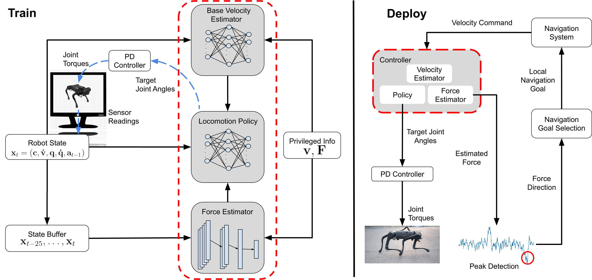
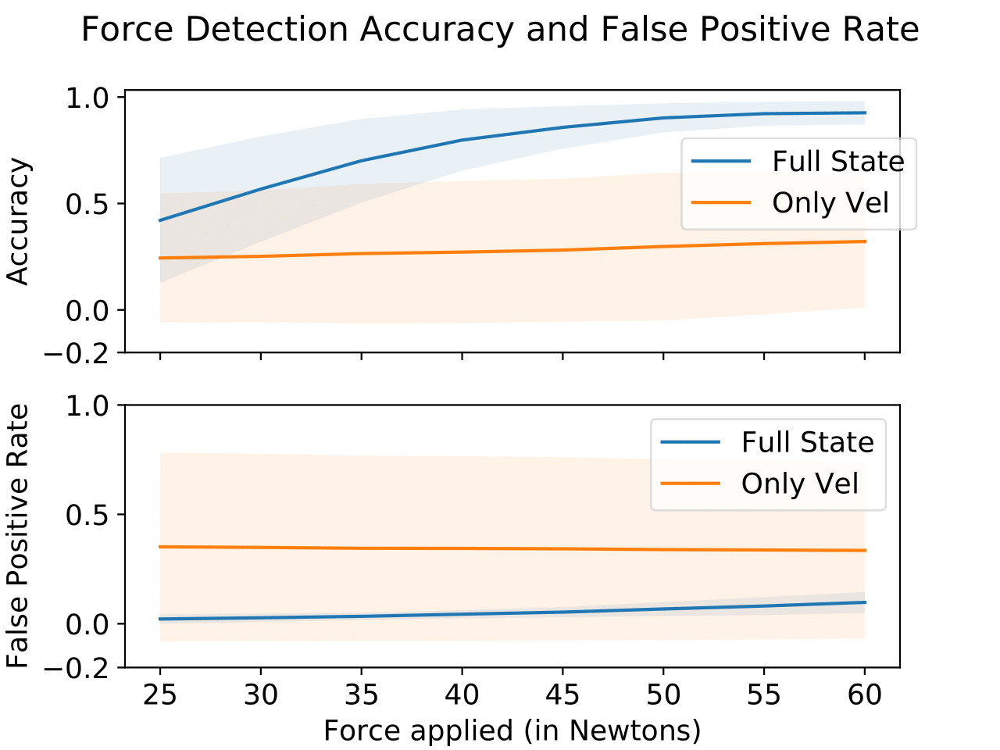
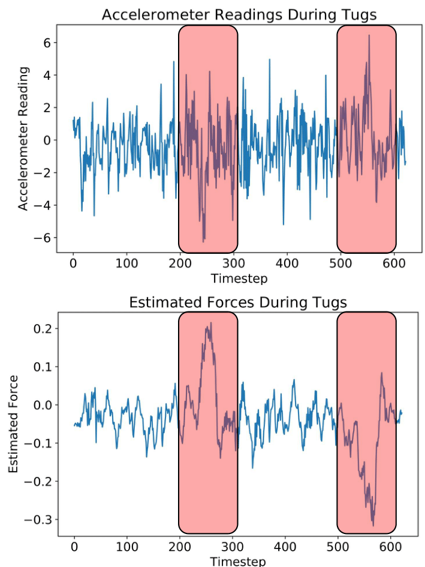
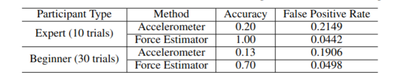

David DeFazio, Eisuke Hirota, Shiqi Zhang
SUNY Binghamton
CoRL, 2023
Abstract
Seeing-eye robots are very useful tools for guiding visually impaired people, potentially producing a huge societal impact given the low availability and high cost of real guide dogs. Although a few seeing-eye robot systems have already been demonstrated, none considered external tugs from humans, which frequently occur in a real guide dog setting. In this paper, we simultaneously train a locomotion controller that is robust to external tugging forces via Reinforcement Learning (RL), and an external force estimator via supervised learning. The controller ensures stable walking, and the force estimator enables the robot to respond to the external forces from the human. These forces are used to guide the robot to the global goal, which is unknown to the robot, while the robot guides the human around nearby obstacles via a local planner. Experimental results in simulation and on hardware show that our controller is robust to external forces, and our seeing-eye system can accurately detect force direction. We demonstrate our full seeing-eye robot system on a real quadruped robot with a blindfolded human.
Overview
|  |
Overview of our approach. Our locomotion controller (circled in red) contains a velocity estimator, force estimator, and locomotion policy, all of which are trained in simulation. The base velocity estimator and force estimator are trained via supervised learning, using privileged information from the simulator as labels. The locomotion policy is trained via RL, and outputs target joint angles to a PD controller which converts them to joint torques which are directly applied to the robot. During deployment, our locomotion controller estimates external force at each time step. Force direction is derived from peaks in the estimated force signal. The direction of force determines the next local navigation goal for our navigation system to take, which returns velocity commands to our controller.
Experiments
We evaluate the accuracy of our force estimator through experiments in simulation, and on hardware.
|  |
We report the accuracy and false positive rate of our force estimators, given forces of varied strength. The shaded region indicates the standard deviation between the five policies trained over five different random seeds.
Hardware
|  |
Measured acceleration (top) and estimated force (bottom) during a single trial. Tugs are denoted by red boxes.
|  |
Force estimation via accelerometer readings vs force estimator signal.